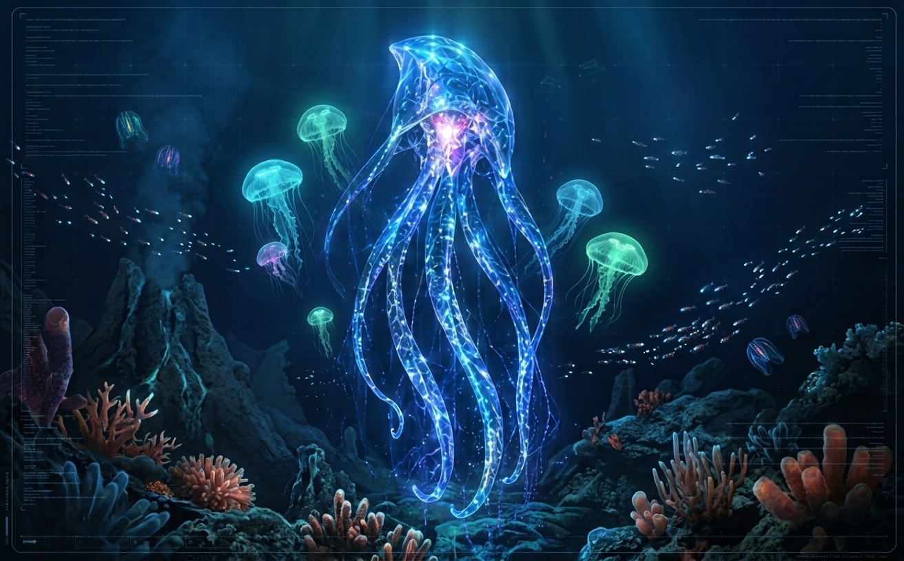

VIDA EN GALATEA
Especies de otros mundos
Cuatro mundos. Cuatro formas diferentes de entender la vida, la evolución y la sociedad. Descubre algunas de las especies que habitan GALATEA.
Comenzar exploraciónBIODIVERSIDAD ALIENÍGENA
La vida encontró caminos diferentes
Los mundos de GALATEA poseen condiciones ambientales muy distintas. A lo largo de su evolución, las especies se han adaptado a océanos bioluminiscentes, desiertos extremos, bosques flotantes y territorios conectados por misteriosos portales.
Las especies que aparecen aquí representan solo una pequeña parte de la biodiversidad que puede existir en estos mundos.
LUMIA
Lumienses
Gigantes bioluminiscentes que habitan los enormes océanos de Lumia. Su sociedad, su comunicación y su propia anatomía están profundamente ligadas a la luz.
HÁBITAT
Océanos
COMUNICACIÓN
Luz y sonido
REPRODUCCIÓN
Ovípara
SOCIEDAD
Altamente social
KRYNAR
Krynerios
Una especie nómada adaptada a uno de los ambientes más extremos de GALATEA, donde sobrevivir significa conocer el territorio y conservar su memoria.
HÁBITAT
Desiertos
EXTREMIDADES
Cuatro brazos
ALIMENTACIÓN
Omnívora
SOCIEDAD
Nómada
LAYEN
Layenses
Una especie inteligente cuya evolución está profundamente conectada con los bosques flotantes y los complejos ecosistemas de Layen.
HÁBITAT
Bosques flotantes
SENTIDOS
Filamentos sensoriales
ALIMENTACIÓN
Extractos naturales
SOCIEDAD
Comunitaria
PORTHA
Portenses
Habitantes de un mundo marcado por la roca, las vibraciones y misteriosas estructuras capaces de conectar lugares separados por enormes distancias.
HÁBITAT
Roca y montañas
VISIÓN
Tres ojos
COMUNICACIÓN
Sonido y vibración
EXTREMIDADES
Brazos muy largos
MÁS ALLÁ DE ESTAS ESPECIES
GALATEA está llena de vida
Lumienses, Krynerios, Layenses y Portenses son algunas de las especies inteligentes conocidas, pero no son las únicas formas de vida de sus respectivos mundos.
Fauna, flora y organismos todavía desconocidos forman ecosistemas mucho más amplios que continuarán creciendo a medida que GALATEA se expanda.